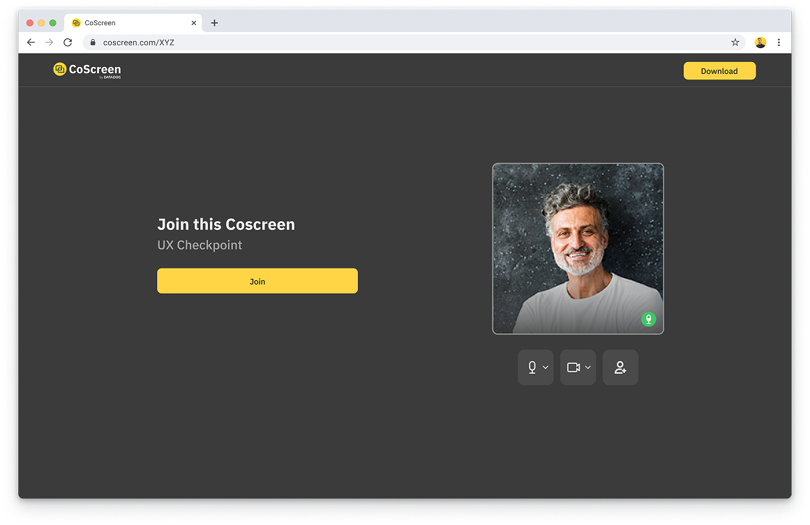
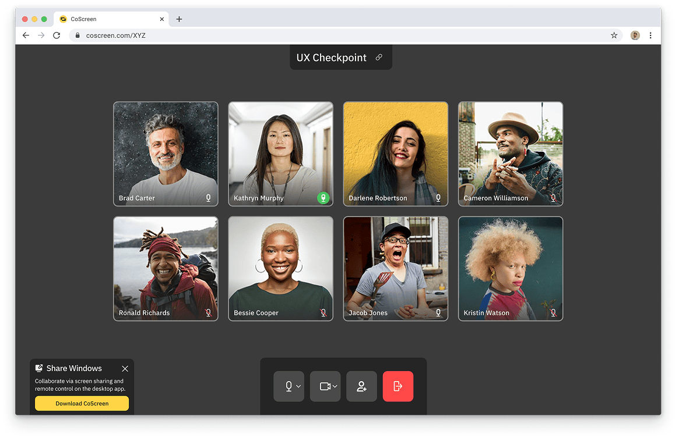
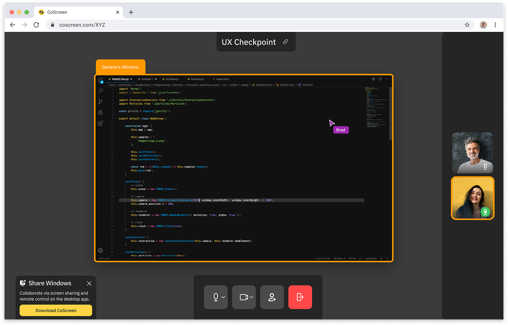
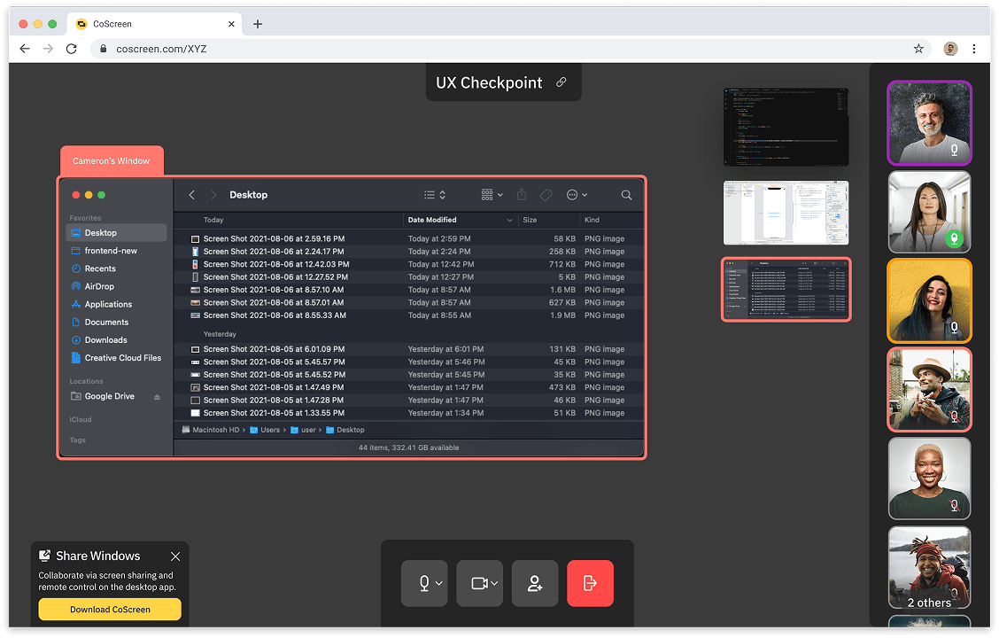
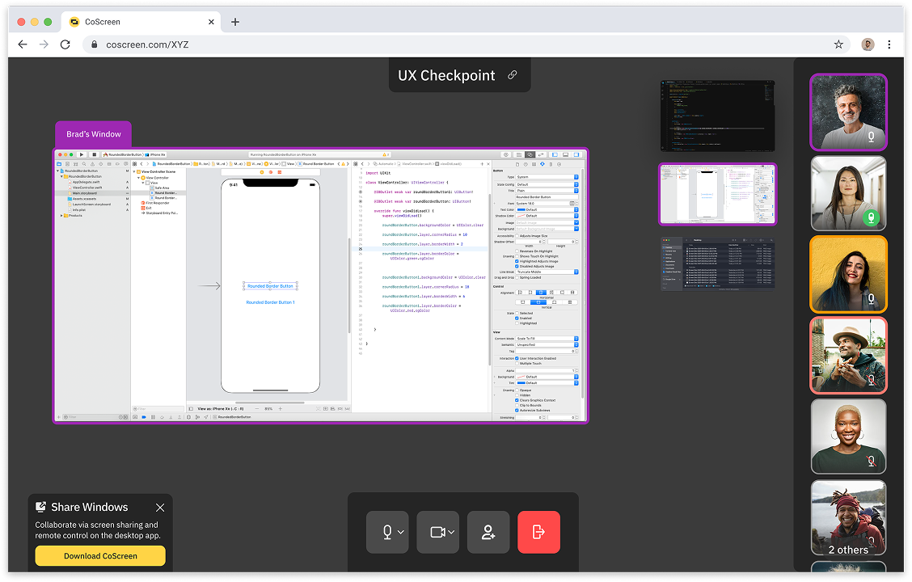
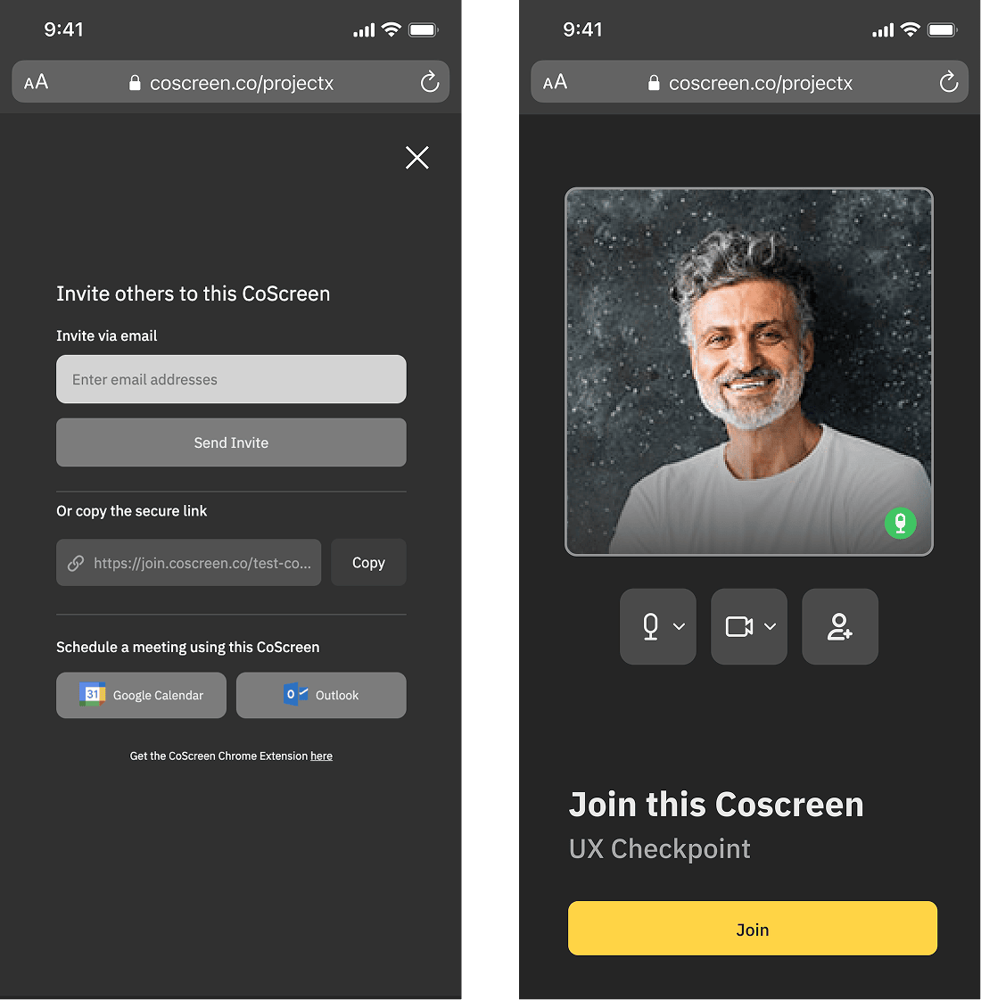
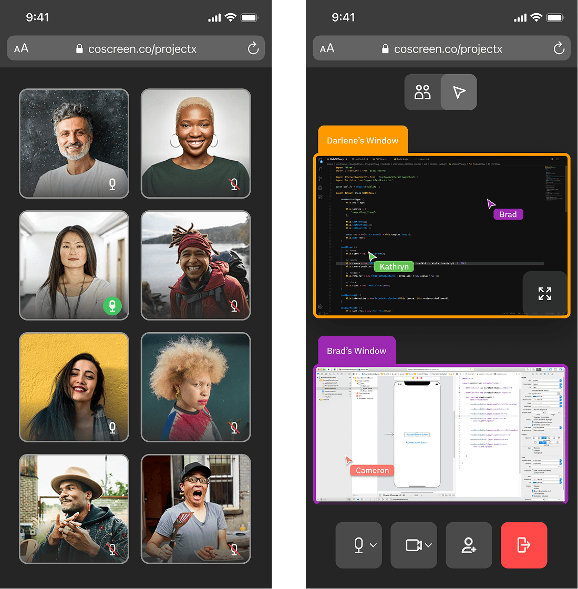
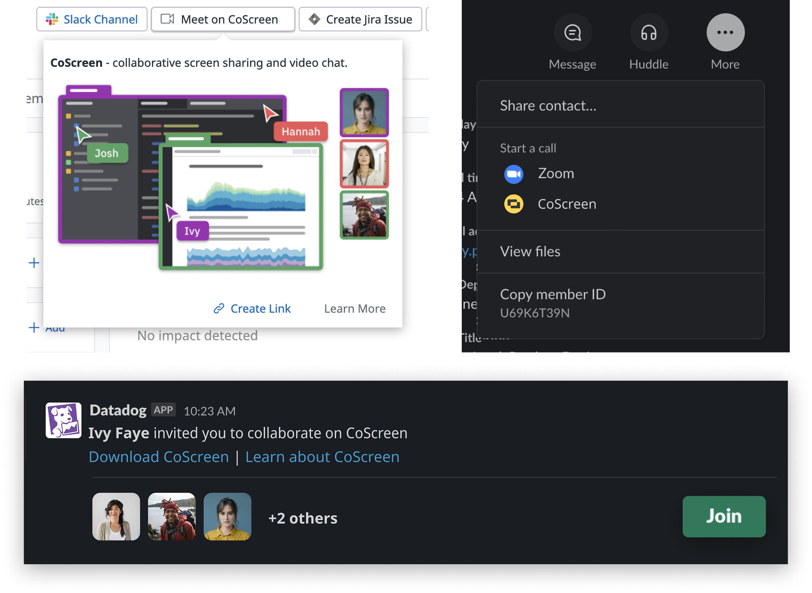

Datadog
CoScreen
During my time in the CoScreen team, I spearheaded the post-acquisition design transition of the collaborative screen-sharing tool to align it with the Datadog ecosystem. We created a fully responsive web version of the app and designed key integrations with the Incident Response product.
Designed and implemented a fully responsive web version of the CoScreen app to remove friction during time-sensitive workflows like incident response. By eliminating the need to install software or grant permissions for basic functionality, the web app enabled immediate access and faster collaboration. It also extended support to mobile browsers, making CoScreen one of the first parts of the Datadog platform accessible on mobile.







Developed two key integrations to bring CoScreen into the broader Datadog ecosystem: one within the Incident Response product and another through the Slack integration. The Incident Response feature enabled users to instantly spin up a CoScreen room for real-time collaboration during active investigations. The Slack integration made it easy to attach CoScreen links to channels or messages, allowing teams to quickly transition from chat to live conversation.
